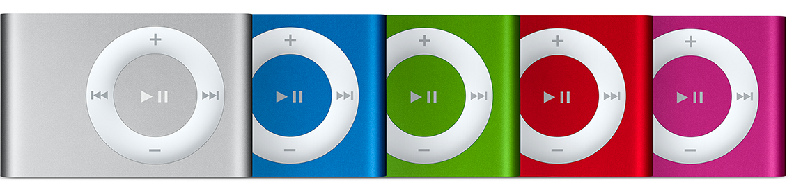
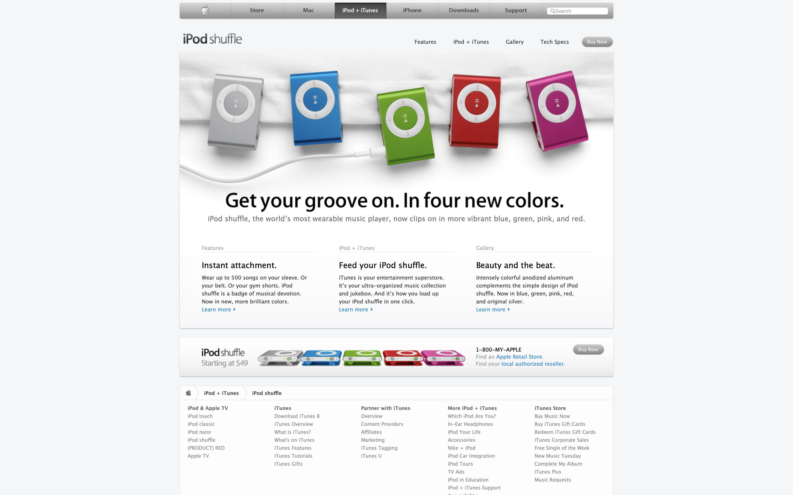

Get your groove on. In four new colors.
iPod shuffle, the world’s most wearable music player, now clips on in more vibrant blue, green, pink, and red.
iPod shuffle (2nd generation) is smaller than the original iPod shuffle and has no USB connector.
 